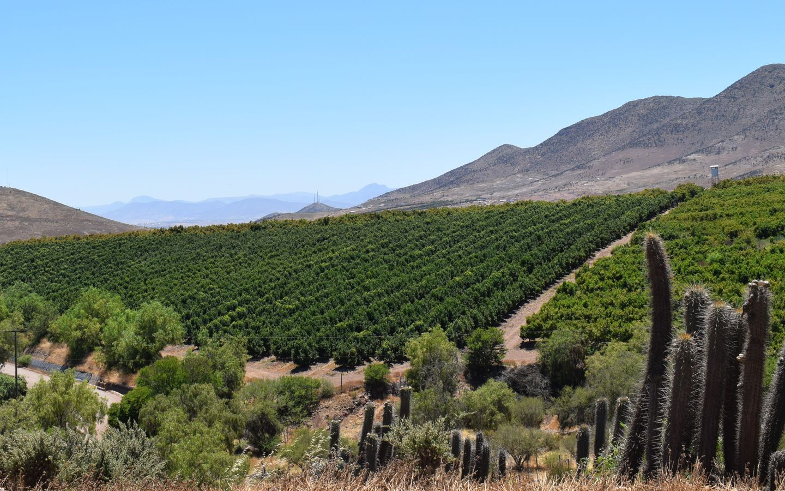
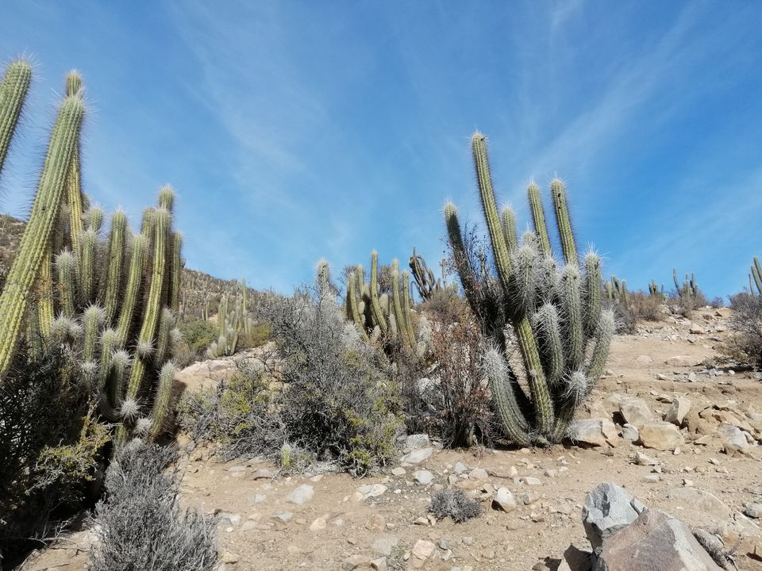

6to Simposio REDLEV
6to Simposio Latinoamericano de Ecofisiología Vegetal
Jueves 19 de noviembre de 2026
Encuentro latinoamericano de investigadoras e investigadores en ecofisiología vegetal, en formato virtual por Zoom.
Convocatoria a resúmenes abierta hasta el viernes 30 de octubre de 2026.

Información del evento
Convocatoria a resúmenes
REDLEV invita a investigadoras, investigadores y estudiantes de posgrado a presentar su trabajo en el simposio. Se reciben resúmenes de todas las áreas de la ecofisiología vegetal, en español o portugués.
Qué enviar
- Título del trabajo.
- Autoras y autores, con afiliación y país. Indica quién presenta y su correo de contacto.
- Preferencia de bloque horario: AM (sesión de la mañana) o PM (sesión de la tarde).
- Resumen de máximo 250 palabras, en un solo párrafo.
Cómo enviarlo
- Descarga la plantilla y completa cada campo.
- Guarda el archivo como
resumen_simposio2026_apellido.docx. - Envíalo a ecofisiologialatinoamerica@gmail.com con el asunto Resumen Simposio REDLEV 2026 – Apellido.

Fechas importantes
- 14 de octubre
- Apertura de la convocatoria
- 30 de octubre
- Cierre de recepción de resúmenes
- 10 de noviembre
- Comunicación de resultados
- 17 de noviembre
- Envío de la presentación (trabajos aceptados)
- 19 de noviembre
- Simposio en línea
Formato de las presentaciones
- Presentaciones orales de 15 minutos, agrupadas en bloques de tres.
- Al final de cada bloque hay 15 minutos de preguntas.
- Cupos limitados. El comité seleccionará los trabajos y los distribuirá en bloques según la preferencia horaria, en la medida de lo posible.
- Las sesiones se grabarán y se publicarán en el canal de YouTube de REDLEV. Al enviar un resumen, las autoras y los autores aceptan la grabación y difusión de su presentación.
Programa
Horario de referencia: Panamá (UTC−5). Debajo de cada hora se indica su equivalente en UTC. Las presentaciones de cada bloque se anunciarán tras la selección de resúmenes.
- 08:45–09:0013:45–14:00 UTC Bienvenida del comité REDLEV
- Sesión de la mañana (AM)
- 09:00–10:0014:00–15:00 UTC Conferencia magistral · Dr. José Carlos Herrera (BOKU University). Título por confirmar.
- 10:00–10:4515:00–15:45 UTC Bloque A · Tres presentaciones de 15 minutos
- 10:45–11:0015:45–16:00 UTC Preguntas del bloque A
- 11:00–11:4516:00–16:45 UTC Bloque B · Tres presentaciones de 15 minutos
- 11:45–12:0016:45–17:00 UTC Preguntas del bloque B
- 12:00–13:0017:00–18:00 UTC Receso
- Sesión de la tarde (PM)
- 13:00–14:0018:00–19:00 UTC Conferencia magistral · Por confirmar
- 14:00–14:4519:00–19:45 UTC Bloque C · Tres presentaciones de 15 minutos
- 14:45–15:0019:45–20:00 UTC Preguntas del bloque C
- 15:00–15:4520:00–20:45 UTC Bloque D · Tres presentaciones de 15 minutos
- 15:45–16:0020:45–21:00 UTC Preguntas del bloque D
- 16:00–16:1521:00–21:15 UTC Cierre del simposio
Horario de la jornada en otros países
Horas locales vigentes el 19 de noviembre de 2026, de la bienvenida al cierre.
- 07:45–15:15 UTC−6 · México (CDMX) y Centroamérica
- 08:45–16:15 UTC−5 · Panamá, Colombia, Ecuador y Perú
- 09:45–17:15 UTC−4 · Bolivia y Venezuela
- 10:45–18:15 UTC−3 · Chile, Argentina, Brasil (Brasilia), Paraguay y Uruguay
- 14:45–22:15 UTC+1 · España y Austria
Inscripción y contacto
La inscripción para asistir y el enlace de conexión por Zoom se publicarán próximamente en esta página.
Para consultas, escribe a ecofisiologialatinoamerica@gmail.com.